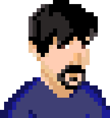
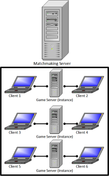

About the Project
This is a tower defense style game with a few unique twists and an undead/fantasy theme. The game was written as a capstone project for the CIS499 course at Lander University. The game features real-time co-operative multiplayer where two players work together to defend their base from attacking zombies by placing and upgrading various defensive "towers" on the map. The game requires a certain amount of strategy and teamwork between players. It features a live chat system to facilitate this teamwork. The game, like most tower defense games, has the players attempt to survive as long as possible against un-ending waves of ever increasingly stronger enemies. Players who manage to survive long enough will have their names and stats recorded on a leaderboard on this webiste's highscores page.
Members of the Group
Andy Buchanan 
Andy is a computer science major (programming concentration) with a minor in design. He was responsible for programming the main game logic as well as designing and creating the visual art assets for the game. Andy also assisted in programming the multiplayer netcode for the game.
Parker Johnson (PJ)
PJ is a computer science major (programming concentration) with a minor in cybersecurity. He was responsible for programming the in-game chat system, as well as the multiplayer netcode. PJ also developed the leaderboard system.
Cole Brown
Cole is a computer science major (networking concentration) with a minor in cyber security. He was responsible for creating this as well as creating the sound assets for the game. Cole also assisted in various planning and documentation aspects of the project.
Technology
The game is written in primarily in JavaScript using the P5 library, and the node.js runtime. MongoDB is leveraged for the leaderboard functionality and simple HTML/CSS is used for the website. The game uses a client/server architecture with a primary matchmaking server connecting players to the game before spawning an instance of a game server for the match to take place in. (see diagram below) This allows a single matchmaking server to be available for creating player connections and the multiple game servers to be istatiated and destroyed as needed. 